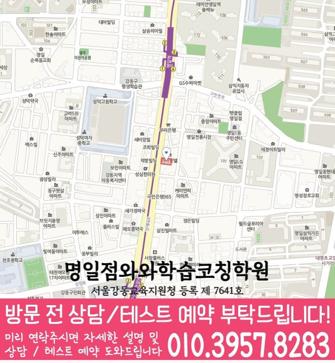

MIDDLE SCHOOL ENGLISH GUIDE
천호동 중3 영어학원
천호동 중3 영어 학습 방향을 정하기 전에 학교 자료, 누적 어휘와 문법 적용, 독해 근거, 서술형 재작성의 확인 순서를 정리했습니다.
천호동서울 강동구
중3영어 가능 학년 기재



핵심 답변
천호동 중3 영어학원, 무엇부터 확인해야 할까요?
천호동에서 중3 영어학원을 비교할 때는 교과서 진도만 보지 말고 어휘 재현, 문법 적용, 독해 근거, 서술형 수정과 시험 전 복습 기록을 함께 살펴야 합니다. 긴 문장에서 주어와 동사를 찾지 못해 해석 순서가 흔들리는 학생이라면 특히 내신 일정이 다른 영역으로 어떻게 연결되는지 확인하는 것이 좋습니다.
LOCAL ENGLISH STUDY GUIDE
서울 강동구 천호동 중3 영어 학습 설계
천호동 중3 영어 상담에서는 선행 범위보다 최근 영어 답안에 남은 흔적을 보는 편이 정확합니다. 독해 정답의 근거 문장을 지문에서 직접 표시할 수 있는지를 먼저 확인하면 내신 일정와 다른 영역 사이의 연결 문제를 구체적으로 찾을 수 있습니다. 천호동에서 이 기준을 적용할 때에는 서울 강동구의 통학 시간까지 고려해 수업일과 복습일이 겹치지 않도록 배치해야 계획이 시험 전까지 유지됩니다. 학교 진도와 별도로 남긴 누적 복습표를 학생 설명과 함께 놓고 재학습 순서를 정합니다.
천호동 중3 영어에서 함께 관리할 네 영역
문법을 답이 아닌 문장 구조로 확인
틀린 문법 문항은 규칙을 다시 읽는 데서 끝내지 않고 원래 문장과 수정 문장을 나란히 두어 달라진 부분을 설명하게 합니다. 천호동에서 이 기준을 적용할 때에는 학생이 질문을 기다리지 않도록 막힌 문장에 표시하고, 와와학습코칭센터 명일점 수업에서 확인한 뒤 유사 문장에 적용하는 단계까지 이어지는지 봅니다. 시험 범위 발표 전후의 남은 분량을 다음 확인 날짜와 연결해 일시적인 암기와 구분합니다.
어휘는 교과서 문맥과 함께 누적
철자와 대표 뜻만 확인하지 않고 파생어, 반대 표현과 자주 함께 쓰이는 말을 문장 단위로 묶어 복습합니다. 천호동에서 이 기준을 적용할 때에는 와와학습코칭센터 명일점에 문의하기 전에는 독해 정답의 근거 문장을 지문에서 직접 표시할 수 있는지를 적어 두면 이 항목을 학생 상황과 연결해 설명받기 쉽습니다. 설명 직후와 다음 확인일의 답안을 현재 답안의 근거와 비교해 선행보다 먼저 볼 항목을 정합니다.
서술형은 수정 이유를 남기는 방식으로
서술형 오답은 내용 전달, 단어 선택, 어순과 문법 형태를 따로 채점해 다음 답안에서 먼저 볼 항목을 정합니다. 천호동에서 이 기준을 적용할 때에는 와와학습코칭센터 명일점의 시간표와 함께 이 활동에 필요한 수업 외 복습 시간을 물어봐야 학생이 실제로 실행할 수 있는 분량을 정할 수 있습니다. 시간 제한 전후의 독해 결과를 상담 질문으로 남겨 실제 피드백 방식과 대조합니다.
독해는 근거 문장과 연결어까지 표시
긴 문장에서 주어와 동사를 먼저 찾고 연결어 앞뒤의 관계를 정리한 뒤 선택지와 지문의 표현을 대조합니다. 천호동 상담 기록에는 처음 진단한 내용과 다음 확인 날짜를 함께 적어 두어 실제 피드백이 계획에 반영됐는지 비교합니다. 누적 오답과 현재 교재의 연결 지점을 학생 설명과 함께 놓고 재학습 순서를 정합니다.
천호중 등 학교 자료를 확인할 때의 기준
센터정보에는 천호중, 배재중, 명일중 등이 수업 가능 학교로 기록되어 있습니다. 실제 적용에서는 학교 공지와 학생 답안을 나란히 보고 어휘·문법·독해·서술형의 우선순위를 정합니다. 틀린 선택지와 이를 제외한 근거를 다음 확인 날짜와 연결해 일시적인 암기와 구분합니다.
문법 적용 방식
천호동 문법 점검에서는 개념 설명 다음의 행동을 봅니다. 교과서 문장과 변형 문장에서 같은 구조를 찾아 적용하는 과정을 와와학습코칭센터 명일점 상담에서 확인합니다. 천호동 상담에서는 배재중의 실제 시험 범위를 준비해 이 기준이 현재 단원에도 맞는지 확인하는 편이 안전합니다. 학생이 표시한 주어와 동사를 해설을 가린 재확인 결과와 비교해 다음 단계를 정합니다.
서술형 조건
문장 수, 핵심 표현, 어순과 문법 조건을 나누고 답안을 고친 이유까지 확인합니다. 천호동에서는 긴 문장에서 주어와 동사를 찾지 못해 해석 순서가 흔들리는 학생에게 같은 기준을 적용했을 때 어느 단계에서 시간이 오래 걸리는지 따로 기록해 보는 것이 좋습니다. 학교 진도와 별도로 남긴 누적 복습표를 다음 확인 날짜와 연결해 일시적인 암기와 구분합니다.
시험 직전 재확인
천호동의 시험 직전 점검은 새 문제 추가보다 기존 오류의 재현을 먼저 봅니다. 틀린 문장과 근거를 와와학습코칭센터 명일점에서 해설 없이 설명할 수 있는지 확인합니다. 천호동에서 이 기준을 적용할 때에는 강동구 지역 학교라도 교과서와 평가 일정은 다를 수 있으므로 천호중의 현재 공지를 기준으로 분량을 다시 나눠야 합니다. 누적 오답과 현재 교재의 연결 지점을 완료 날짜와 재확인 날짜를 함께 적어 다음 계획에 반영합니다.
내신 일정을 중심으로 구성한 주간 수업 흐름
01. 범위와 일정 나누기
시험일까지 남은 주차와 교과서·프린트·단어 범위를 작은 완료 단위로 나눕니다. 천호동 학습 계획에는 완료 여부뿐 아니라 며칠 뒤 해설 없이 다시 설명한 결과까지 남겨야 다음 복습량을 조정할 수 있습니다. 학생이 표시한 주어와 동사를 현재 답안의 근거와 비교해 선행보다 먼저 볼 항목을 정합니다.
02. 독해 흐름 정리
천호동 독해 기록은 문단별 한 문장 요약부터 시작합니다. 연결어와 대명사가 가리키는 대상을 와와학습코칭센터 명일점 수업에서 직접 표시하게 합니다. 천호동에서 이 기준을 적용할 때에는 내신 일정이 약한 경우에는 이 활동을 한 번에 길게 하기보다 수업 직후와 주중으로 나눠 재현 여부를 확인합니다. 학생이 표시한 주어와 동사를 다음 확인 날짜와 연결해 일시적인 암기와 구분합니다.
03. 시간 제한 연습
정확도가 확보된 뒤 독해와 문법 문제의 풀이 시간을 단계적으로 기록합니다. 강동구 천호동의 학교 일정과 학생의 다른 과제량을 함께 놓고 보면 같은 학습량이라도 완료 날짜를 다르게 정해야 할 수 있습니다. 학생이 실제로 확보한 주중 복습 시간을 학생 설명과 함께 놓고 재학습 순서를 정합니다.
04. 서술형 복원
틀린 답안을 조건별로 고친 뒤 며칠 후 같은 의미의 새 문장을 다시 작성합니다. 천호동에서 이 기준을 적용할 때에는 긴 문장에서 주어와 동사를 찾지 못해 해석 순서가 흔들리는 학생이라면 이 항목의 난도를 높이기 전에 기본 문장에서 정확하게 재현되는 횟수를 먼저 확인하는 편이 좋습니다. 틀린 선택지와 이를 제외한 근거를 학교 범위와 누적 복습으로 나눠 주간표에 반영합니다.
천호동 학생의 답안에서 시작하는 영어 점검 순서
진단 신호
천호동에서는 독해 정답을 고른 뒤 지문 속 근거 위치를 다시 찾지 못하는지부터 살펴봅니다. 긴 문장에서 주어와 동사를 찾지 못해 해석 순서가 흔들리는 학생에게 같은 기준을 적용하면 막힌 위치를 진도보다 구체적으로 나눌 수 있습니다. 시간 제한 전후의 독해 결과를 정확도와 소요 시간을 분리해 무리 없는 순서를 계산합니다.
첫 학습 행동
맞힌 독해 문제도 근거 문장을 표시하게 해 이해한 정답과 우연히 고른 정답을 구분합니다. 공개 자료에 기재된 명일중의 실제 교과서와 시험 범위는 상담 시 최신 자료로 대조합니다. 교과서와 학교 프린트의 완료 기록을 완료 날짜와 재확인 날짜를 함께 적어 다음 계획에 반영합니다.
완료 판단
어휘는 뜻·품사·교과서 속 쓰임을 가린 상태에서 다시 말할 수 있는지를 완료 기준으로 삼습니다. 이 결과는 와와학습코칭센터 명일점 상담에서 다음 주 복습량을 조정하는 질문으로 사용합니다. 학생이 표시한 주어와 동사를 현재 답안의 근거와 비교해 선행보다 먼저 볼 항목을 정합니다.
일정 배치
평소에는 어휘와 문장 구조를 누적하고 시험 범위 발표 뒤에는 학교 자료의 우선순위를 높입니다. 서울 강동구 천호동에서 통학과 다른 과목 일정을 제외한 실제 영어 복습 시간을 먼저 계산합니다. 시험 범위 발표 전후의 남은 분량을 상담 질문으로 남겨 실제 피드백 방식과 대조합니다.
간격을 둔 재확인
천호동 학습 기록에서는 수업에서 고친 문장을 이틀 뒤 다시 제시해 해설 없이 구조와 뜻을 복원하는지 확인합니다. 명일중 자료의 현재 범위와 겹치는 문장부터 확인합니다. 누적 오답과 현재 교재의 연결 지점을 현재 답안의 근거와 비교해 선행보다 먼저 볼 항목을 정합니다.
근거 기록
시험 범위가 바뀌면 기존 계획을 지우지 않고 변경 전후 순서를 남겨 남은 분량을 다시 계산합니다. 이 기록을 와와학습코칭센터 명일점의 다음 수업 계획과 대조해 피드백이 실제 행동으로 이어지는지 봅니다. 학생이 표시한 주어와 동사를 다음 확인 날짜와 연결해 일시적인 암기와 구분합니다.
상담 비교 기준
오답 관리라는 표현보다 해설 없이 다시 푸는 시점과 통과 기준이 정해져 있는지 묻습니다. 서울 강동구의 일정과 천호동 학생이 확보한 복습 시간을 함께 놓고 판단합니다. 학생이 실제로 확보한 주중 복습 시간을 해설을 가린 재확인 결과와 비교해 다음 단계를 정합니다.
와와학습코칭센터 명일점에 문의할 때는 “시험 직전 새 문제와 누적 오답 사이의 비중을 어떤 근거로 바꾸는지”를 확인하고, 독해 정답의 근거 문장을 지문에서 직접 표시할 수 있는지도 최근 답안과 함께 준비하면 수업 설명을 학생 상황에 맞춰 비교하기 쉽습니다. 교과서와 학교 프린트의 완료 기록을 같은 기준으로 대조해 다음 분량을 조정합니다.
천호동 중3 영어 학습 기록을 읽는 다섯 기준
답안에서 찾을 신호
천호동 기록에서는 최근 시험지에서 정답 여부와 근거 설명 여부를 따로 표시합니다. 같은 점수라도 오류 시작점이 다르면 학습 순서를 다르게 정합니다. 학생이 실제로 확보한 주중 복습 시간을 완료 날짜와 재확인 날짜를 함께 적어 다음 계획에 반영합니다.
첫 수업의 행동
천호동 학생에게는 현재 진도에 필요한 이전 개념만 짧게 복원하고 곧바로 학교 문장에 연결합니다. 와와학습코칭센터 명일점 상담에서는 이 행동이 실제 피드백에 남는지 확인합니다. 본문 암기 결과와 문장 구조 설명 결과를 별도 칸에 기록해 완료 여부를 판단합니다.
완료와 재확인
천호동의 완료 기준은 다음과 같습니다. 정해진 시간 안 결과와 시간 제한 없이 정확히 푼 결과를 함께 기록합니다. 다음 확인일의 결과가 달라지면 천호동의 복습 순서부터 다시 조정합니다. 지문에서 찾은 답의 근거 위치를 학생 설명과 함께 놓고 재학습 순서를 정합니다.
주간 일정 배치
천호동 주간표에는 정확도가 자리 잡기 전에는 시간 제한을 늦추고 이후 풀이 시간을 단계적으로 줄입니다. 천호중의 현재 일정은 학생이 가져온 자료로 다시 대조합니다. 틀린 선택지와 이를 제외한 근거를 현재 답안의 근거와 비교해 선행보다 먼저 볼 항목을 정합니다.
상담에서 물을 질문
와와학습코칭센터 명일점에 문의할 때는 학년 진도보다 현재 답안에서 확인된 중1 공백을 어떻게 연결하는지 질문합니다. 독해 정답의 근거 문장을 지문에서 직접 표시할 수 있는지도 최근 답안과 함께 확인합니다. 누적 오답과 현재 교재의 연결 지점을 오류가 시작된 지점별로 나눠 보완 범위를 좁힙니다.
기록 해석
천호동의 영어 기록을 볼 때는 학교 자료별 남은 범위를 교과서·프린트·수행평가로 나눠 누락된 준비를 확인합니다. 와와학습코칭센터 명일점에서는 이 기록이 다음 과제에 반영되는지도 확인합니다. 질문한 문장과 유사 문장의 독립 해결 결과를 정확도와 소요 시간을 분리해 무리 없는 순서를 계산합니다.
가정 복습 연결
천호동 학생의 실제 생활 시간에는 학교 일정이 바뀐 날에는 남은 분량을 다시 나누고 미룬 이유를 계획표에 기록합니다. 실행 여부는 다음 상담에서 계획표와 함께 확인합니다. 시험 범위 발표 전후의 남은 분량을 학교 범위와 누적 복습으로 나눠 주간표에 반영합니다.
다음 주 조정
천호동의 다음 주 계획은 고정하지 않습니다. 독해 근거가 흔들리면 다음 지문에서 연결어와 대명사 표시부터 다시 시작합니다. 조정 결과는 학생 답안으로 다시 확인합니다. 지문에서 찾은 답의 근거 위치를 별도 칸에 기록해 완료 여부를 판단합니다.
천호동 중3 영어학원을 비교할 때는 한 번의 점수보다 학생이 틀린 문장을 스스로 고치고 며칠 뒤 다시 설명할 수 있는지를 확인하세요. 공개된 학년 정보에서 와와학습코칭센터 명일점의 중3 영어 대상을 확인할 수 있습니다. 다만 시간표와 수업 시작 가능일은 천호동 상담에서 다시 확인해야 합니다. 학생이 표시한 주어와 동사를 상담 질문으로 남겨 실제 피드백 방식과 대조합니다.
HIGH SCHOOL BRIDGE
천호동 중3 영어의 내신과 고교 진입 전 연결
천호동 학생의 최근 답안과 재풀이 기록을 비교하면 내신 준비와 고교 연결 학습의 비중을 사실에 근거해 조정할 수 있습니다. 고교 영어 준비 범위는 중학교 교과서 문장과 누적 어휘를 독립적으로 재현한 뒤 판단합니다. 시험 범위 발표 전후의 남은 분량을 별도 칸에 기록해 완료 여부를 판단합니다.
시간 관리
정확한 해석과 근거 찾기가 안정된 뒤 지문 시간과 검토 시간을 따로 기록합니다. 실제 주중 시간 안에서 가능한 분량으로 조정합니다. 설명 직후와 다음 확인일의 답안을 상담 질문으로 남겨 실제 피드백 방식과 대조합니다.
누적 어휘
단어 뜻만 외우지 않고 품사·문맥 의미·파생 형태를 문장 안에서 다시 확인합니다. 실제 주중 시간 안에서 가능한 분량으로 조정합니다. 시험 범위 발표 전후의 남은 분량을 완료 날짜와 재확인 날짜를 함께 적어 다음 계획에 반영합니다.
오답 재현
정답을 가리고 다시 고친 결과가 다음 과제와 재확인 날짜에 반영되는지 봅니다. 학생이 혼자 설명한 범위를 완료 기준으로 둡니다. 본문 암기 결과와 문장 구조 설명 결과를 다음 확인 날짜와 연결해 일시적인 암기와 구분합니다.
내신 일정
시험 범위 확정 전 누적 복습과 확정 후 학교 자료 중심 계획을 구분합니다. 질문한 문장과 유사 문장의 해결 결과를 대조합니다. 문법 설명 뒤 새 문장에 적용한 결과를 현재 답안의 근거와 비교해 선행보다 먼저 볼 항목을 정합니다.
VERIFIED LOCAL FACTS
천호동 센터 정보와 수업 확인 항목
기존 전국학원 페이지와 공개 센터 자료에 있는 사실만 사용했으며, 기재되지 않은 학교나 운영 조건은 임의로 만들지 않았습니다.
서울 강동구 양재대로 1606 3층
서울강동교육지원청 등록 제 7641호
공개 센터 자료의 영어 가능 학년에 중3이 포함되어 있습니다. 실제 반 편성과 일정은 와와학습코칭센터 명일점 상담에서 확인해야 합니다.
수업 횟수·시간표·보강 기준과 함께 비교합니다.
공개 자료의 중학교 안내 · 3개
공개 자료의 영어 가능 학년
센터 교습비 자료 확인상담 전 체크리스트
천호동 중3 영어학원 비교 전에 적어둘 내용
천호동 학생의 시험지에서 독해 정답의 근거 문장을 지문에서 직접 표시할 수 있는지를 확인할 수 있는 문장과 수정 흔적을 한두 개 표시합니다.
긴 문장에서 주어와 동사를 찾지 못해 해석 순서가 흔들리는 학생에게 어휘·문법·독해·서술형 중 먼저 바꿀 영역을 하나 정하고 내신 일정과의 연결을 메모합니다.
공개 영어 가능 학년 ‘초5, 초6, 중1, 중2, 중3, 고1, 고2, 고3’에 중3이 포함되는지와 현재 반 편성·시작일을 함께 확인합니다.
읽기 전 예측 → 문장 구조 분석 → 핵심 내용 요약 → 답의 근거 설명이 천호동 학생의 실제 주중 일정에 들어가는지 완료 날짜까지 적어 계산합니다.
고교 영어 준비 범위는 중학교 교과서 문장과 누적 어휘를 독립적으로 재현한 뒤 판단합니다.
FAQ & PARENT VIEW
천호동 중3 영어학원 자주 묻는 질문과 학부모 상담 관점
화면 질문과 답변은 JSON-LD에도 동일하게 반영했습니다. 상담 관점은 특정 성과를 보장하는 후기가 아니라 비교에 참고할 수 있도록 재구성한 예시입니다.
천호동 중3 영어학원 상담 전에 어떤 영어 자료를 준비하면 좋나요?
최근 영어 시험지, 교과서와 학교 프린트, 현재 단어장, 틀린 서술형 답안을 준비하세요. 특히 독해 정답의 근거 문장을 지문에서 직접 표시할 수 있는지를 메모하면 시작점을 더 구체적으로 설명할 수 있습니다. 공개 정보만으로 단정하지 않고 와와학습코칭센터 명일점의 현재 운영 내용과 학생 자료를 대조합니다. 이 답변은 천호동 페이지의 공개 정보 범위에서 정리했습니다.
천호동 중3 영어학원은 어떤 학생에게 맞는지 어떻게 판단하나요?
긴 문장에서 주어와 동사를 찾지 못해 해석 순서가 흔들리는 학생이라면 설명 뒤 문장을 스스로 해석하고 고치는 과정이 있는지 확인해야 합니다. 문장 구조를 끊어 읽은 뒤 같은 문법이 쓰인 새 문장에 적용합니다. 천호동에서는 독해 정답의 근거 문장을 지문에서 직접 표시할 수 있는지도 같은 상담표에 적어 비교 기준을 구체화합니다. 이 답변은 천호동 페이지의 공개 정보 범위에서 정리했습니다.
와와학습코칭센터 명일점에서 중3 영어 수강이 가능한가요?
공개된 와와학습코칭센터 명일점 영어 가능 학년은 초5, 초6, 중1, 중2, 중3, 고1, 고2, 고3이며 중3이 포함되어 있습니다. 실제 시간표, 반 편성과 시작 가능일은 천호동 상담에서 최신 정보로 다시 확인합니다. 와와학습코칭센터 명일점 상담에서는 설명보다 실제 교재와 피드백 예시를 함께 확인하는 편이 안전합니다. 이 답변은 천호동 페이지의 공개 정보 범위에서 정리했습니다.
천호동의 학교별 영어 자료는 어떻게 확인하나요?
공개된 와와학습코칭센터 명일점 자료에는 천호중, 배재중, 명일중 등 3개 중학교가 기재되어 있습니다. 천호중을 포함한 실제 교과서·시험 범위·일정은 상담할 때 최신 학교 자료로 다시 확인합니다. 와와학습코칭센터 명일점 상담에서는 설명보다 실제 교재와 피드백 예시를 함께 확인하는 편이 안전합니다. 이 답변은 천호동 페이지의 공개 정보 범위에서 정리했습니다.
와와학습코칭센터 명일점 상담에서 시간표와 교습비는 어떻게 확인하나요?
공개 교습비 링크와 주당 횟수, 시작·종료 시각, 결석·보강 기준, 시험 기간 일정 변동을 같은 표에 적어 비교합니다. 천호동에서는 독해 정답의 근거 문장을 지문에서 직접 표시할 수 있는지도 같은 상담표에 적어 비교 기준을 구체화합니다. 이 답변은 천호동 페이지의 공개 정보 범위에서 정리했습니다.
천호동 중3 영어학원에서 교과서 본문 암기만 해도 충분한가요?
본문 암기는 출발점일 뿐입니다. 문장 구조, 핵심 표현, 문단 흐름과 변형 질문의 근거를 설명하고 조건을 바꾼 문장에도 적용할 수 있어야 합니다. 와와학습코칭센터 명일점 상담에서는 설명보다 실제 교재와 피드백 예시를 함께 확인하는 편이 안전합니다. 이 답변은 천호동 페이지의 공개 정보 범위에서 정리했습니다.
천호동 중3 영어에서 고교 진입 전에 무엇을 먼저 확인하나요?
선행 범위를 임의로 정하지 않고 현재 학교 답안에서 누적 어휘·문법 적용·독해 근거·서술형 수정이 독립적으로 이어지는지 확인합니다. 고교 영어 준비 범위는 중학교 교과서 문장과 누적 어휘를 독립적으로 재현한 뒤 판단합니다. 실제 범위는 학생 자료와 주간 학습 가능 시간을 기준으로 조정합니다.
RELATED GUIDES
천호동 중3 과목과 다른 지역 비교
같은 동네 수학 안내와 시군구·광역권을 우선한 영어 페이지를 상호 연결했습니다.